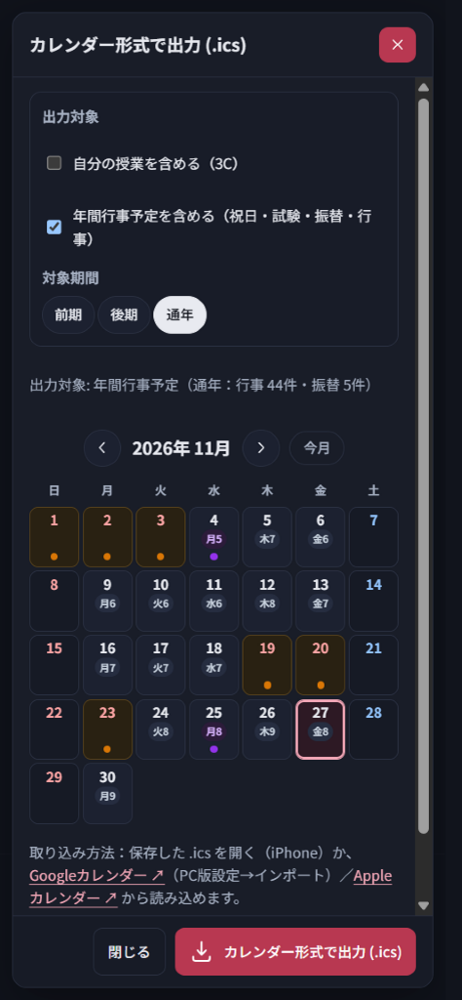

カレンダー形式（.ics）をアプリに取り込む
授業時間割や年間行事予定を .ics ファイルとして保存し、iPhone 標準カレンダーや Google カレンダーに取り込むことで、スマホの通知やウィジェットで予定を確認できます。
1ポータルから .ics ファイルを保存する
「行事予定」 ページ下部、または 「時間割」 ページの保存形式で「カレンダー形式 (.ics)」を選び、「プレビュー & カレンダー形式で保存」 を押します。
出力対象（授業スケジュール / 年間行事予定）や期間を確認し、「カレンダー形式で出力 (.ics)」 を押してファイルをダウンロードします。

2iPhone（標準カレンダー）に取り込む
Safari でダウンロード後に表示されるファイルを開く（または「ファイル」アプリ内のダウンロードから .ics をタップ）と、予定の一覧が表示されます。
画面の 「すべてを追加」（または登録先カレンダーを選択して「追加」）をタップすると、一括で登録されます。
ヒント：時間割専用のカレンダーを新しく作って登録すると、後から一括削除や色分けがしやすくなります。
3Google カレンダーに取り込む
Google カレンダーのスマホアプリ単体では .ics インポート画面がないため、ブラウザ（PC版表示）の Google カレンダー を開きます。
右上の歯車アイコン ⚙（設定）→「インポート / エクスポート」 から保存した .ics ファイルを選択して「インポート」を押すと、同じ Google アカウントのスマホアプリにも自動で同期されます。